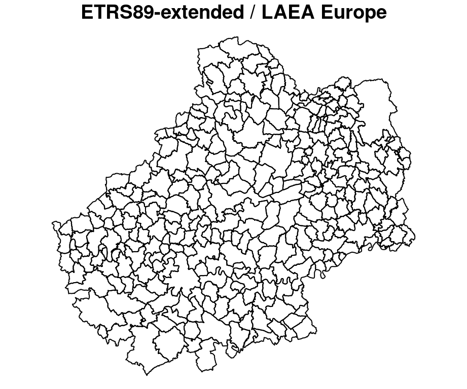
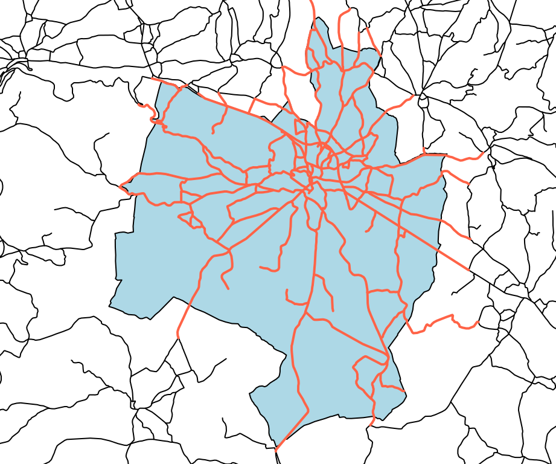
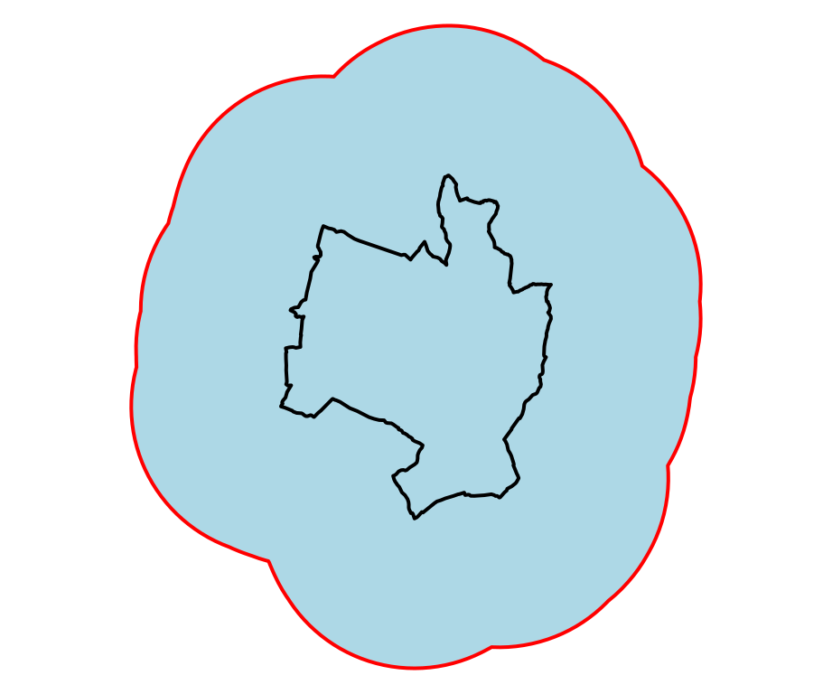
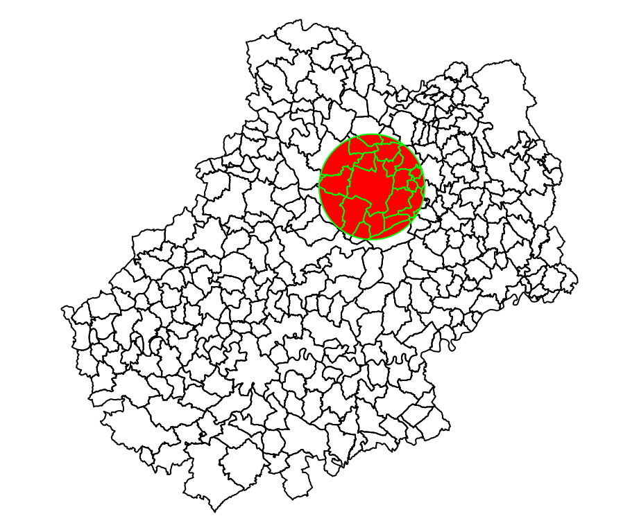

Chapitre 3 Les données vectorielles
3.1 Format des objets spatiaux sf

Les objets sf sont des data.frame dont l’une des colonnes contient des géométries. Cette colonne est de la classe sfc (simple feature column) et chaque individu de la colonne est un sfg (simple feature geometry).
Ce format est très pratique dans la mesure ou les données et les géométries sont intrinsèquement liées dans un même objet.
Simple Features for R
3.2 Import et export de données
Les fonctions st_read() et st_write() permettent d’importer et d’exporter de nombreux types de fichiers.
Les lignes suivantes importent la couche des communes du département du Lot situé dans le fichier geopackage lot46.gpkg.
library(sf)
com <- st_read("data/lot46.gpkg", layer = "commune")Reading layer `commune' from data source
`/home/tim/Documents/prj/geomatique_avec_r/data/lot46.gpkg' using driver `GPKG'
Simple feature collection with 313 features and 12 fields
Geometry type: MULTIPOLYGON
Dimension: XY
Bounding box: xmin: 539668.5 ymin: 6346290 xmax: 637380.9 ymax: 6439668
Projected CRS: RGF93 / Lambert-93Les lignes suivantes exportent l’objet com dans un dossier data aux formats geopackage et shapefile.
st_write(obj = com, dsn = "data/com.gpkg", layer = "commune", delete_layer = TRUE)Deleting layer `commune' using driver `GPKG'
Writing layer `commune' to data source `data/com.gpkg' using driver `GPKG'
Writing 313 features with 12 fields and geometry type Multi Polygon.st_write(obj = com, "data/com.shp", layer_options = "ENCODING=UTF-8", delete_layer = TRUE)Deleting layer `com' using driver `ESRI Shapefile'
Writing layer `com' to data source `data/com.shp' using driver `ESRI Shapefile'
options: ENCODING=UTF-8
Writing 313 features with 12 fields and geometry type Multi Polygon.3.3 Affichage
Aperçu des variables via les fonctions head() et plot().
head(com)Simple feature collection with 6 features and 12 fields
Geometry type: MULTIPOLYGON
Dimension: XY
Bounding box: xmin: 556391.9 ymin: 6371852 xmax: 614866.5 ymax: 6418606
Projected CRS: RGF93 / Lambert-93
INSEE_COM NOM_COM STATUT POPULATION AGR_H AGR_F IND_H
1 46001 Albas Commune simple 522 4.978581 0.000000 4.936153
2 46002 Albiac Commune simple 67 0.000000 9.589041 0.000000
3 46003 Alvignac Commune simple 706 10.419682 0.000000 10.419682
4 46004 Anglars Commune simple 219 0.000000 0.000000 20.000000
5 46005 Anglars-Juillac Commune simple 329 4.894895 4.894895 4.894895
6 46006 Anglars-Nozac Commune simple 377 4.840849 0.000000 0.000000
IND_F BTP_H BTP_F TER_H TER_F geom
1 0.000000 9.957527 0.000000 44.917145 34.681799 MULTIPOLYGON (((559262 6371...
2 0.000000 4.794521 0.000000 4.794521 9.589041 MULTIPOLYGON (((605540.7 64...
3 5.209841 10.419682 0.000000 57.308249 78.147612 MULTIPOLYGON (((593707.7 64...
4 15.000000 10.000000 0.000000 20.000000 20.000000 MULTIPOLYGON (((613211.3 64...
5 0.000000 0.000000 0.000000 29.369369 29.369369 MULTIPOLYGON (((556744.9 63...
6 0.000000 9.681698 4.840849 43.567639 38.726790 MULTIPOLYGON (((576667.2 64...plot(com)
Affichage de la géométrie uniquement.
plot(st_geometry(com))
3.4 Les systèmes de coordonnées
3.4.1 Consulter le système de coordonnées d’un objet
La fonction st_crs() permet de consulter le système de coordonnées utilisé par un objet sf.
st_crs(com)Coordinate Reference System:
User input: RGF93 / Lambert-93
wkt:
PROJCRS["RGF93 / Lambert-93",
BASEGEOGCRS["RGF93",
DATUM["Reseau Geodesique Francais 1993",
ELLIPSOID["GRS 1980",6378137,298.257222101,
LENGTHUNIT["metre",1]]],
PRIMEM["Greenwich",0,
ANGLEUNIT["degree",0.0174532925199433]],
ID["EPSG",4171]],
CONVERSION["Lambert-93",
METHOD["Lambert Conic Conformal (2SP)",
ID["EPSG",9802]],
PARAMETER["Latitude of false origin",46.5,
ANGLEUNIT["degree",0.0174532925199433],
ID["EPSG",8821]],
PARAMETER["Longitude of false origin",3,
ANGLEUNIT["degree",0.0174532925199433],
ID["EPSG",8822]],
PARAMETER["Latitude of 1st standard parallel",49,
ANGLEUNIT["degree",0.0174532925199433],
ID["EPSG",8823]],
PARAMETER["Latitude of 2nd standard parallel",44,
ANGLEUNIT["degree",0.0174532925199433],
ID["EPSG",8824]],
PARAMETER["Easting at false origin",700000,
LENGTHUNIT["metre",1],
ID["EPSG",8826]],
PARAMETER["Northing at false origin",6600000,
LENGTHUNIT["metre",1],
ID["EPSG",8827]]],
CS[Cartesian,2],
AXIS["easting (X)",east,
ORDER[1],
LENGTHUNIT["metre",1]],
AXIS["northing (Y)",north,
ORDER[2],
LENGTHUNIT["metre",1]],
USAGE[
SCOPE["Engineering survey, topographic mapping."],
AREA["France - onshore and offshore, mainland and Corsica."],
BBOX[41.15,-9.86,51.56,10.38]],
ID["EPSG",2154]]3.4.2 Modifier le système de coordonnées d’un objet
La fonction st_transform() permet de change le système de coordonnées d’un objet sf, de le reprojeter.
plot(st_geometry(com))
title("RGF93 / Lambert-93")com_reproj <- st_transform(com, "epsg:3035")
plot(st_geometry(com_reproj))
title("ETRS89-extended / LAEA Europe") Le site Spatial Reference met à disposition les références de très nombreux systèmes de coordonnées.
3.5 Sélection par attributs
Les objets sf sont des data.frame, on peut donc sélectionner leur lignes et leur colonnes de la même manière que les data.frame.
# selection de ligne
com[1:2, ]Simple feature collection with 2 features and 12 fields
Geometry type: MULTIPOLYGON
Dimension: XY
Bounding box: xmin: 557759.2 ymin: 6371852 xmax: 607179 ymax: 6410204
Projected CRS: RGF93 / Lambert-93
INSEE_COM NOM_COM STATUT POPULATION AGR_H AGR_F IND_H IND_F BTP_H
1 46001 Albas Commune simple 522 4.978581 0.000000 4.936153 0 9.957527
2 46002 Albiac Commune simple 67 0.000000 9.589041 0.000000 0 4.794521
BTP_F TER_H TER_F geom
1 0 44.917145 34.681799 MULTIPOLYGON (((559262 6371...
2 0 4.794521 9.589041 MULTIPOLYGON (((605540.7 64...com[com$NOM_COM == "Gramat", ]Simple feature collection with 1 feature and 12 fields
Geometry type: MULTIPOLYGON
Dimension: XY
Bounding box: xmin: 593605.6 ymin: 6402330 xmax: 602624.6 ymax: 6413784
Projected CRS: RGF93 / Lambert-93
INSEE_COM NOM_COM STATUT POPULATION AGR_H AGR_F IND_H IND_F
119 46128 Gramat Commune simple 3468 10.19868 15.29802 122.3842 107.0862
BTP_H BTP_F TER_H TER_F geom
119 56.09275 0 260.0664 304.1941 MULTIPOLYGON (((594713.1 64...# selection de colonnes
com[com$NOM_COM == "Gramat", 1:4]Simple feature collection with 1 feature and 4 fields
Geometry type: MULTIPOLYGON
Dimension: XY
Bounding box: xmin: 593605.6 ymin: 6402330 xmax: 602624.6 ymax: 6413784
Projected CRS: RGF93 / Lambert-93
INSEE_COM NOM_COM STATUT POPULATION geom
119 46128 Gramat Commune simple 3468 MULTIPOLYGON (((594713.1 64...3.6 Sélection spatiale
3.6.1 Intersections
Sélection des routes intesectant la commune de Gramat.
route <- st_read("data/lot46.gpkg", layer = "route", quiet = TRUE)
gramat <- com[com$NOM_COM == "Gramat", ]
inter <- st_intersects(x = route, y = gramat, sparse = FALSE)
head(inter) [,1]
[1,] FALSE
[2,] FALSE
[3,] FALSE
[4,] FALSE
[5,] FALSE
[6,] FALSEdim(inter)[1] 16096 1L’objet inter est une matrice qui indique pour chacun des éléments de l’objet route (16096 éléments) si il
intersecte chacun des élément de l’objet gramat (1 élément).
La dimension de la matrice est donc bien 16096 lignes * 1 colonne.
Notez l’utilisation du paramètre sparse = FALSE ici.
Il est ensuite possible de créer une colonne à partir de cet objet :
route$intersect_gramat <- inter
plot(st_geometry(gramat), col = "lightblue")
plot(st_geometry(route), add = TRUE)
plot(st_geometry(route[route$intersect_gramat, ]),
col = "tomato", lwd = 2, add = TRUE)
3.6.1.1 Différence entre sparse = TRUE et sparse = FALSE

sparse = TRUE
inter <- st_intersects(x = grid, y = pt, sparse = TRUE)
interSparse geometry binary predicate list of length 4, where the predicate was
`intersects'
1: (empty)
2: 6, 7
3: 1, 4
4: 2, 3, 5, 8sparse = FALSE
inter <- st_intersects(x = grid, y = pt, sparse = FALSE)
rownames(inter) <- grid$id
colnames(inter) <- pt$id
inter a b c d e f g h
1 FALSE FALSE FALSE FALSE FALSE FALSE FALSE FALSE
2 FALSE FALSE FALSE FALSE FALSE TRUE TRUE FALSE
3 TRUE FALSE FALSE TRUE FALSE FALSE FALSE FALSE
4 FALSE TRUE TRUE FALSE TRUE FALSE FALSE TRUE3.6.2 Contains / Within
Sélection des routes contenues dans la commune de Gramat.
La fonctin st_within() fonctionne comme la fonction st_intersects()
route$within_gramat <- st_within(route, gramat, sparse = FALSE)
plot(st_geometry(gramat), col = "lightblue")
plot(st_geometry(route), add = TRUE)
plot(st_geometry(route[route$within_gramat, ]), col = "tomato",
lwd = 2, add = TRUE)
3.7 Opérations sur les géométries
3.7.1 Extraire des centroides
com_c <- st_centroid(com)
plot(st_geometry(com))
plot(st_geometry(com_c), add = TRUE, cex = 1.2, col = "red", pch = 20)3.7.2 Agréger des polygones
dep_46 <- st_union(com)
plot(st_geometry(com), col = "lightblue")
plot(st_geometry(dep_46), add = TRUE, lwd = 2, border = "red")3.7.3 Agréger des polygones en fonction d’une variable
com_u <- aggregate(x = com[,c("POPULATION")],
by = list(STATUT = com$STATUT),
FUN = "sum")
plot(com_u)
3.7.4 Construire une zone tampon
gramat_b <- st_buffer(x = gramat, dist = 5000)
plot(st_geometry(gramat_b), col = "lightblue", lwd=2, border = "red")
plot(st_geometry(gramat), add = TRUE, lwd = 2)
3.7.5 Réaliser une intersection
En utilisant la fonction st_intersection() on va découper une couche par une autre.
# création d'une zone tampon autour du centroid de la commune de Gramat
# en utilisant le pipe
zone <- st_geometry(gramat) |>
st_centroid() |>
st_buffer(10000)
plot(st_geometry(com))
plot(zone, border = "red", lwd = 2, add = TRUE)
com_z <- st_intersection(x = com, y = zone)
plot(st_geometry(com))
plot(st_geometry(com_z), col="red", border="green", add=T)
plot(st_geometry(com_z))3.7.6 Créer une grille régulière
La fonction st_make_grid() permet de créer une grille régulière.
La fonction produit un objet sfc, il faut ensuite utiliser la fonction st_sf() pour transformer
cet objet sfc en objet sf. Lors de cette transformation nous rajoutons ici une colonne
d’identifiants uniques.
grid <- st_make_grid(x = com, cellsize = 2500)
grid <- st_sf(ID = 1:length(grid), geom = grid)
plot(st_geometry(grid), col = "grey", border = "white")
plot(st_geometry(com), border = "grey50", add = TRUE)3.7.7 Compter des points dans un polygone
# selection des carreaux de la grille qui intersectent le département
inter <- st_intersects(grid, dep_46, sparse = FALSE)
grid <- grid[inter, ]
restaurant <- st_read("data/lot46.gpkg", layer = "restaurant", quiet = TRUE)
plot(st_geometry(grid), col = "grey", border = "white")
plot(st_geometry(restaurant), pch = 20, col = "red", add = TRUE, cex = .2)inter <- st_intersects(grid, restaurant, sparse = TRUE)
length(inter)[1] 936Ici nous utilisons l’argument sparse = TRUE. L’objet inter est une liste de la longueur de l’objet grid et chaque élément de la liste contient l’index des éléments de l’objet restaurant qu’il intersecte.
Par exemple le carreau 795 intersecte les restaurants 2716 et 2718 :
inter[795][[1]]
[1] 2716 2718plot(st_geometry(grid[795, ]))
plot(st_geometry(restaurant), add = T)
plot(st_geometry(restaurant[c(2716, 2718), ]),
col = "red", pch = 19, add = TRUE)Pour compter le nombre de restaurants il suffit de parcourir la liste et de reporter la longueur de chacun de ces éléments.
grid$nb_restaurant <- sapply(X = inter, FUN = length)
plot(grid["nb_restaurant"])3.7.8 Aggréger les valeurs de points dans des polygones
Dans cet exemple nous importons un fichier csv qui contient les données d’une grille de population.
Une fois importé nous transformons le data.frame en objet sf.
L’objectif est d’aggréger les valeur de ces points (les populations contenues dans le champ “Ind”) dans les communes du Lot.
# Import du ficier
pop_raw <- read.csv("data/pop.csv")
# ajout d'un identifiant unique
pop_raw$id <- 1:nrow(pop_raw)
# transformation en objet sf
pop <- st_as_sf(pop_raw, coords = c("x", "y"), crs = 3035)
# gestion de la projection
pop <- st_transform(pop, st_crs(com))
# intersection
inter <- st_intersection(pop, com)
interSimple feature collection with 4350 features and 14 fields
Geometry type: POINT
Dimension: XY
Bounding box: xmin: 540316 ymin: 6347200 xmax: 637157.8 ymax: 6439117
Projected CRS: RGF93 / Lambert-93
First 10 features:
Ind id INSEE_COM NOM_COM STATUT POPULATION AGR_H AGR_F IND_H IND_F
1069 3 1069 46001 Albas Commune simple 522 4.978581 0 4.936153 0
1070 7 1070 46001 Albas Commune simple 522 4.978581 0 4.936153 0
1129 11 1129 46001 Albas Commune simple 522 4.978581 0 4.936153 0
1130 9 1130 46001 Albas Commune simple 522 4.978581 0 4.936153 0
1131 13 1131 46001 Albas Commune simple 522 4.978581 0 4.936153 0
1189 18 1189 46001 Albas Commune simple 522 4.978581 0 4.936153 0
BTP_H BTP_F TER_H TER_F geometry
1069 9.957527 0 44.91714 34.6818 POINT (559462.5 6372439)
1070 9.957527 0 44.91714 34.6818 POINT (560457.4 6372534)
1129 9.957527 0 44.91714 34.6818 POINT (559374.1 6373435)
1130 9.957527 0 44.91714 34.6818 POINT (560369 6373530)
1131 9.957527 0 44.91714 34.6818 POINT (561363.8 6373625)
1189 9.957527 0 44.91714 34.6818 POINT (558290.8 6374337)
[ reached 'max' / getOption("max.print") -- omitted 4 rows ]En utilisant la fonction st_intersection() nous rajoutons à chacun des point de la grille l’ensemble des information sur la commune dans lequel il se trouve.
Nous pouvons ensuite utiliser la fonction aggregate() pour aggreger la population par communes.
resultat <- aggregate(x = list(pop_from_grid = inter$Ind),
by = list(INSEE_COM = inter$INSEE_COM),
FUN = "sum")
head(resultat) INSEE_COM pop_from_grid
1 46001 472.0
2 46002 79.0
3 46003 518.5
4 46004 144.5
5 46005 308.0
6 46006 345.0On peut ensuite créer un nouvel objet avec ce resultat.
com_res <- merge(com, resultat, by = "INSEE_COM", all.x = TRUE)
com_resSimple feature collection with 313 features and 13 fields
Geometry type: MULTIPOLYGON
Dimension: XY
Bounding box: xmin: 539668.5 ymin: 6346290 xmax: 637380.9 ymax: 6439668
Projected CRS: RGF93 / Lambert-93
First 10 features:
INSEE_COM NOM_COM STATUT POPULATION AGR_H AGR_F IND_H
1 46001 Albas Commune simple 522 4.978581 0.000000 4.936153
2 46002 Albiac Commune simple 67 0.000000 9.589041 0.000000
3 46003 Alvignac Commune simple 706 10.419682 0.000000 10.419682
4 46004 Anglars Commune simple 219 0.000000 0.000000 20.000000
5 46005 Anglars-Juillac Commune simple 329 4.894895 4.894895 4.894895
6 46006 Anglars-Nozac Commune simple 377 4.840849 0.000000 0.000000
IND_F BTP_H BTP_F TER_H TER_F pop_from_grid
1 0.000000 9.957527 0.000000 44.917145 34.681799 472.0
2 0.000000 4.794521 0.000000 4.794521 9.589041 79.0
3 5.209841 10.419682 0.000000 57.308249 78.147612 518.5
4 15.000000 10.000000 0.000000 20.000000 20.000000 144.5
5 0.000000 0.000000 0.000000 29.369369 29.369369 308.0
6 0.000000 9.681698 4.840849 43.567639 38.726790 345.0
geometry
1 MULTIPOLYGON (((559262 6371...
2 MULTIPOLYGON (((605540.7 64...
3 MULTIPOLYGON (((593707.7 64...
4 MULTIPOLYGON (((613211.3 64...
5 MULTIPOLYGON (((556744.9 63...
6 MULTIPOLYGON (((576667.2 64...
[ reached 'max' / getOption("max.print") -- omitted 4 rows ]3.8 Mesures
3.8.1 Créer une matrice de distances
Si le système de projection du jeu de données est renseigné les distances sont exprimées dans l’unité de mesure de la projection (en mètres le plus souvent).
mat <- st_distance(x = com_c, y = com_c)
mat[1:5,1:5]Units: [m]
[,1] [,2] [,3] [,4] [,5]
[1,] 0.000 56784.77 54353.94 61166.42 3790.688
[2,] 56784.770 0.00 12454.29 7146.11 57288.103
[3,] 54353.942 12454.29 0.00 19388.52 54030.811
[4,] 61166.418 7146.11 19388.52 0.00 62016.141
[5,] 3790.688 57288.10 54030.81 62016.14 0.0003.9 Exercices
3.9.1 Calculer le nombre de restaurants par communes
- Quelles communes ont plus de 10 restaurants et moins de 1000 habitants ?
# Import des restaurants
restaurant <- st_read("data/lot46.gpkg", layer = "restaurant", quiet = TRUE)
# Calcul des intersections
inter <- st_intersects(x = com, y = restaurant, sparse = TRUE)
# Parcourir la liste et compter le nombre d"éléments
com$nb_restaurant <- sapply(X = inter, FUN = length)
plot(com["nb_restaurant"])com_sel <- com[com$nb_restaurant >=10 & com$POPULATION <= 1000,]
com_sel$NOM_COM[1] "Rocamadour" "Saint-Cirq-Lapopie"- Créez une carte où vous afficherez toutes les communes en gris et les communes sélectionnées plus haut en rouge.
plot(st_geometry(com), col = "grey")
plot(st_geometry(com_sel), col = "red", add = TRUE)3.9.2 Mesurer la densité du réseau routier par commune
- Intersecter les routes par les communes
Découper les routes par les communes. Chaque segment de route récupère l’identifiant de la commune dans laquelle il se trouve.
st_intersection()
route_com <- st_intersection(route, com[,"INSEE_COM"])
head(route_com, 1)Simple feature collection with 1 feature and 20 fields
Geometry type: LINESTRING
Dimension: XY
Bounding box: xmin: 559100.3 ymin: 6372557 xmax: 561184 ymax: 6373301
Projected CRS: RGF93 / Lambert-93
ID VOCATION NB_CHAUSSE NB_VOIES ETAT ACCES POS_SOL
2572 BDCTRORO0000000021341618 Liaison locale 1 chaussée 1 voie Revêtu Libre Au sol
RES_VERT SENS NB_VOIES_M NB_VOIES_D TOPONYME USAGE
2572 Non Double sens Sans objet Sans objet <NA> Logique et cartographique
DATE NUM_ROUTE CLASS_ADM GEST_ROUTE intersect_gramat within_gramat INSEE_COM
2572 2021-05-07 <NA> Sans objet <NA> FALSE FALSE 46001
geom
2572 LINESTRING (559100.3 637330...- Calculer la longueur des segments de route
Rajouter une colonne longueur qui contient la longueur de chacun des segments.
st_length()
route_com$longueur <- st_length(route_com)- Calculer la longueur totale de route par commune
Aggreger les segments de routes par commune pour obtenir des longueurs totales par commune.
aggregate()
longueur_total <- aggregate(x = list(longueur = route_com$longueur),
by = list(INSEE_COM = route_com$INSEE_COM),
FUN = sum)- Joindre les longueurs à la table des communes
merge()
com_dens <- merge(x = com[,c('INSEE_COM', "POPULATION")],
y = longueur_total,
by = "INSEE_COM", all.x = TRUE)- Calculer les superficies des communes
st_area()
com_dens$superficie <- st_area(com_dens)- Convertir les unités des différentes mesures
units(…)<-“km^2”
units(com_dens$superficie) <- "km^2"
units(com_dens$longueur) <- "km"- Calculer les indicateurs
Le premier est le rapport entre la longueur des routes et la population des communes.
Le deuxième est le rapport entre la longueur des routes et la superficie des communes.
com_dens$dens_pop <- com_dens$longueur / com_dens$POPULATION
plot(com_dens["dens_pop"], main = "km / hab")com_dens$dens_sup <- com_dens$longueur / com_dens$superficie
plot(com_dens["dens_sup"], main = "km / km²")